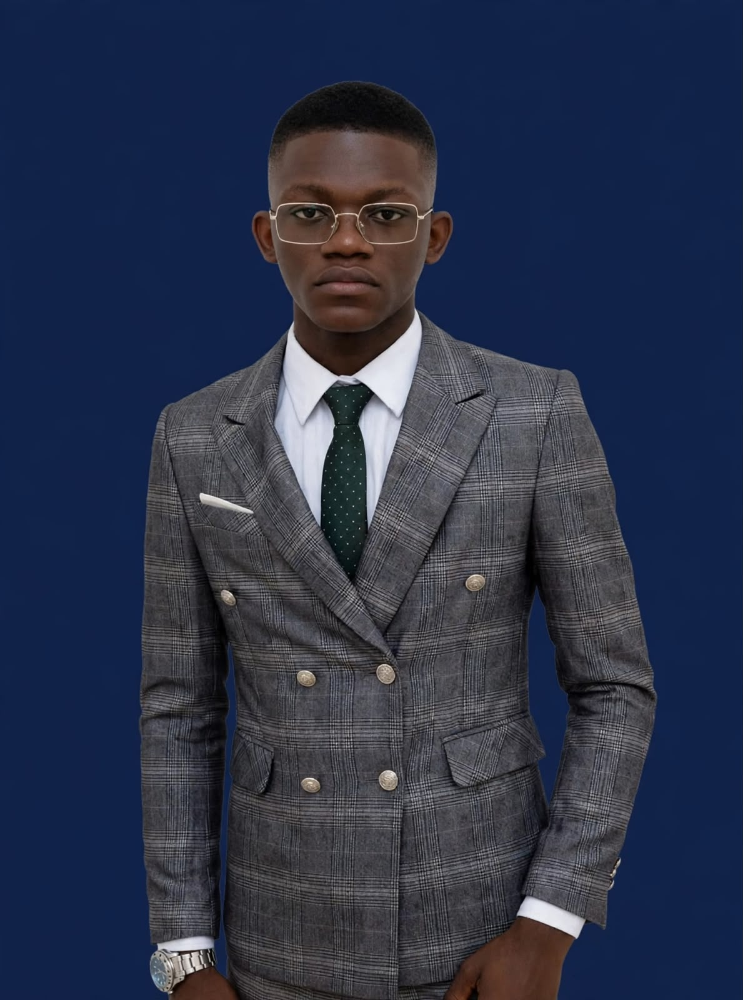
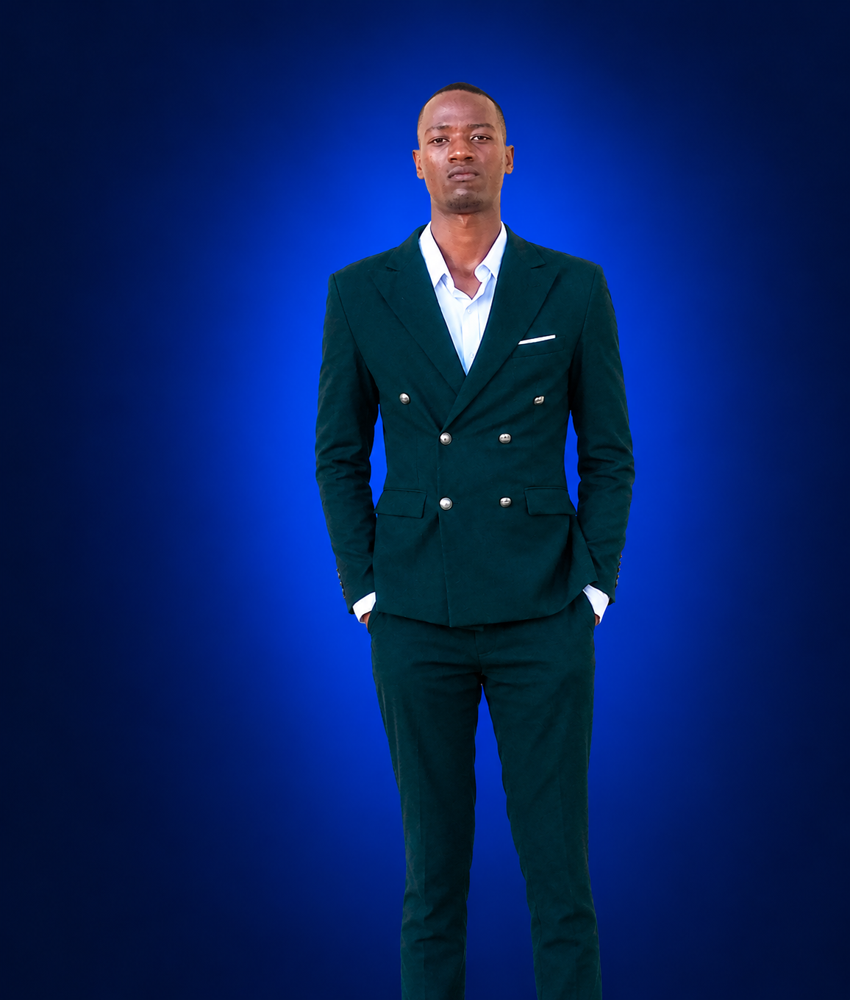
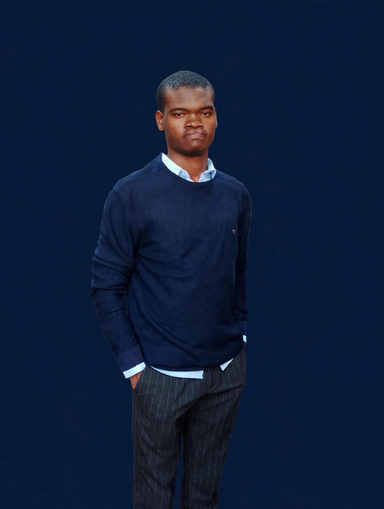

Missão
Promover o pensamento crítico, a liderança e a diplomacia entre jovens, aproximando-os das oportunidades que ampliam o seu futuro.
Diplomacia começa com uma voz.
Formamos a próxima geração de líderes e diplomatas angolanos.
Quero fazer parte do ILDLOnde podes começar
Sobre nós
O ILDL é uma iniciativa angolana que transforma conhecimento em voz, voz em liderança e liderança em impacto.
Promover o pensamento crítico, a liderança e a diplomacia entre jovens, aproximando-os das oportunidades que ampliam o seu futuro.
Ser uma referência na formação de uma geração angolana preparada para liderar, negociar e representar o país no mundo.
Excelência, integridade, serviço, diversidade de ideias e compromisso com o desenvolvimento de Angola.
SONU / MUN
As Simulações das Nações Unidas — SONU, também conhecidas internacionalmente como MUN (Model United Nations) — são experiências académicas em que estudantes representam países e assumem o papel de diplomatas.
Durante os comités, os participantes investigam temas globais, apresentam discursos, negoceiam posições e constroem alianças. Os debates culminam na proposta de resoluções para problemas mundiais como paz, clima, saúde, educação e direitos humanos.
Para os estudantes angolanos, cada simulação é uma porta para o mundo: desenvolve oratória, liderança e pensamento crítico, fortalece o inglês, cria networking internacional e aproxima os jovens de oportunidades académicas e bolsas de estudo.
O que fazemos
Programas desenhados para tirar o conhecimento do papel e colocá-lo ao serviço de Angola.
Simulações das Nações Unidas que desenvolvem negociação, oratória, investigação e visão global.
Conhecer o programa →Um espaço seguro para construir argumentos, escutar perspetivas e defender ideias com rigor.
Conhecer o programa →Formação prática para jovens que querem mobilizar equipas e criar soluções nas suas comunidades.
Conhecer o programa →Desafios que celebram a curiosidade, a excelência académica e o talento científico angolano.
Conhecer o programa →Impacto
A nossa ambição para 2026 é criar pontes reais entre jovens, universidades e oportunidades.
“A ILDL ajudou-me a transformar insegurança em confiança. Hoje apresento as minhas ideias com clareza e vejo novas possibilidades para o meu futuro.
“Encontrei na ILDL uma comunidade que me desafiou a liderar, ouvir e agir. A experiência mudou a forma como encaro os estudos e o meu papel em Angola.
A nossa equipa
Uma equipa multidisciplinar, unida pela educação, pelo serviço e pela vontade de fazer acontecer.
Presidente da ILDL

Vice-presidente

Diretor do Clube de Liderança
Diretor das SONU e Debates
Diretora das Parcerias e Patrocínios

Coordenador das Parcerias e Patrocínios
Galeria
Momentos de aprendizagem, debate, liderança e partilha que dão vida à nossa comunidade.
Crescemos com quem acredita na educação
Faça parte
Sou estudante
Conta-nos quem és e que oportunidade procuras.
Sou empresa
Apoie programas académicos, bolsas e oportunidades para jovens angolanos. Vamos construir uma parceria com propósito.